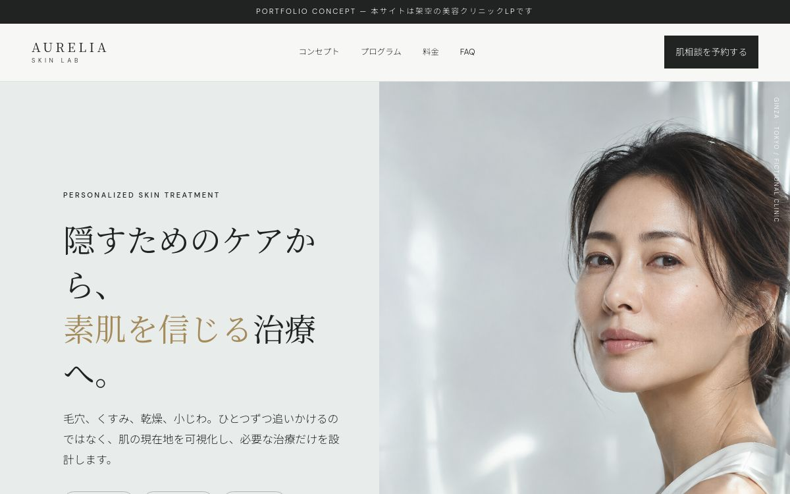
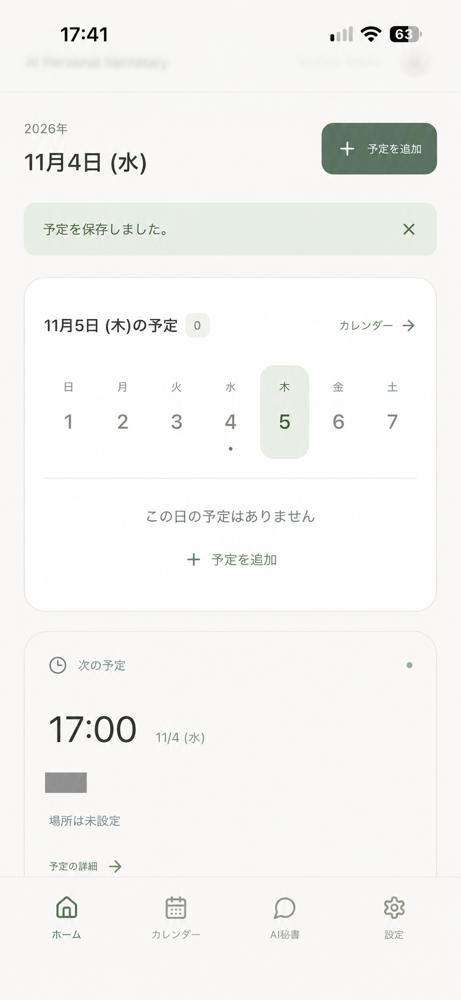
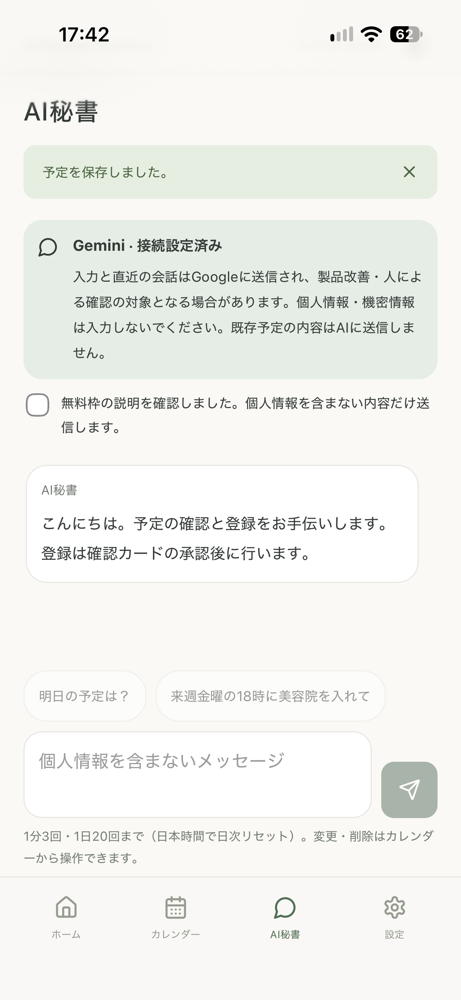

01BEFORE / AFTER
BEAUTY RETOUCH
ビューティーレタッチ（映像）
VISUAL RETOUCHER / CREATOR
Beauty / Video Retouch + Digital
ビューティーレタッチ（映像）
映像レタッチ
素材そのものの魅力や質感を活かしながら、必要な部分を細かく調整し、違和感のない仕上がりを目指します。
03 CONCEPT PROJECT / WEB DESIGN
架空の美容クリニックを想定した自主制作LP
Concept / Design / Responsive /
AI-assisted Development

04 PERSONAL PROJECT / AI APPLICATION
Planning / UI・UX Design / AI-assisted Development
日々の予定管理をより直感的かつ効率的に行うことを目的として、生成AIを活用したパーソナルスケジュール管理アプリを個人開発。
企画・画面構成・デザイン方針を自身で設計し、ChatGPT・Codexを活用して実装。使いやすさと視覚的な統一感を重視しながら、機能の検証と改善を行っています。
使用ツール
ChatGPT / Codex / Gemini / Supabase / Vercel
個人利用向けアプリのため、本体は非公開。


Video Retouch / Beauty Retouch
Video Editing
Image Retouch
Graphic Design
AI-assisted Web Development
Visual Retoucher / Creator
映像・画像のレタッチを軸に、Beauty領域を中心としたVisual制作から、Web・デジタル領域まで対応しています。
お問い合わせ
内容の確認
お見積もり
制作
納品
お問い合わせ先は準備中です。